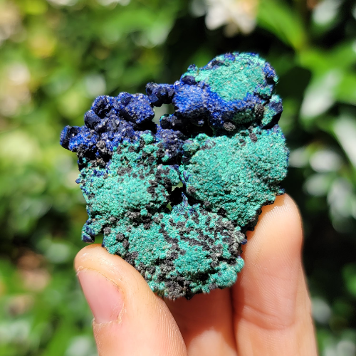

New here?

New to rockhounding and don't know where to start? Not to worry, we will show you the ropes. Click below to head over to our "Getting Started" guide
Getting StartedRocks & Minerals In Missouri


Missouri, known as the "Cave State" and home to the ancient St. Francois Mountains, offers a wide range of rockhounding experiences. With its rich deposits of minerals, crystals, and fossils, the state is a haven for collectors and enthusiasts alike. Discover stunning galena, vibrant drusy quartz, and the world-renowned Missouri lace agate. From the lead belt in the southeastern region to the numerous fossil sites along the riverbeds, Missouri's geological wonders are sure to captivate rockhounds of all ages.
Sponsored Dig Site

Own a digsite you would like to advertize in Missouri? Contact us for more information about being our sponsor of the month! Email sponsors@rockhounding.org for more information.
Dig With UsPopular Rocks In Missouri
-
 Galena
GalenaGalena is the primary ore mineral of lead and is commonly found in Missouri's Viburnum Trend, an area rich in lead and zinc deposits. Its cubic or octahedral crystals are metallic gray, with a high specific gravity and a brilliant shine.
Read More -
 Fluorite
FluoriteFluorite, a popular mineral among collectors, is found in various locations across Missouri, including the Reynolds County and the Lead Belt. It forms cubic crystals in a range of colors, but purple is the most common in Missouri.
Read More -
 Crinoid
CrinoidCrinoids, also known as "sea lilies," are marine animals with a long, stalk-like body and a flower-like head. Their abundant fossils can be found in Missouri's limestone deposits, particularly in the central and eastern regions of the state.
Read More -
 Calcite
CalciteCalcite is a common mineral in Missouri, particularly in the Ozark Plateau region. It forms various crystal shapes, often white or colorless, and is found in limestone, marble, and other rocks. Calcite is also a major component of cave formations like stalactites and stalagmites.
Read More -
 Barite
BariteBarite, known for its heavy, tabular crystals, is found in Washington County and other parts of Missouri's Lead Belt. The mineral's colors range from colorless to yellow or brown, and it is often associated with lead and zinc deposits.
Read More -
 Trilobite
TrilobiteTrilobites are ancient marine arthropods that lived over 500 million years ago. Their fossils, found in Missouri's sedimentary rocks, provide valuable insight into the state's Paleozoic past. Trilobite fossils are commonly found in northeastern Missouri, especially in limestone and shale deposits.
Read More -

Malachite
Malachite, a vibrant green mineral, is found in the Missouri Lead Belt. It often occurs as botryoidal or stalactitic masses and is a secondary copper mineral formed in the oxidation zone of copper deposits.
Read More -
 Chert
ChertChert is a type of microcrystalline quartz, found throughout Missouri in the form of nodules or layers within limestone and dolomite formations. It is commonly red or yellow in color and has been used by Native Americans for making tools and weapons.
Read More -
 Gypsum
GypsumGypsum, a soft, water-soluble mineral, can be found in southwestern Missouri, particularly in the vicinity of the Tri-State mining district. It forms a variety of crystal shapes and is often colorless or white, though it can also exhibit various shades of gray or yellow.
Read More
Popular Areas In Missouri
-
 Mastodon State Historic Site
Mastodon State Historic SiteVisit this historic site to learn about prehistoric creatures and discover fossilized mastodon bones and teeth.
Read More -
 Park Hills
Park HillsExplore the Park Hills area, where you can find barite, galena, and calcite crystals among the remnants of old mines.
Read More -
 Joplin
JoplinJoplin is famous for its beautiful green-colored smithsonite crystals found in old mine areas.
Read More -
 Grindstone Nature Area
Grindstone Nature AreaSearch for trace fossils of ancient sea creatures in the limestone formations of Grindstone Nature Area.
Read More -
 Missouri Mines State Historic Site
Missouri Mines State Historic SiteLearn about the rich mining history of Missouri and hunt for galena and sphalerite in the mine tailings.
Read More -
 Viburnum Trend
Viburnum TrendExplore the Viburnum Trend, one of the most significant lead mining districts in the world, where copper minerals can also be found.
Read More
Geology of Missouri
Missouri's geology has a rich and varied history that dates back to the Precambrian Era, over a billion years ago. The state's oldest rocks can be found in the St. Francois Mountains, where igneous rocks such as granite and rhyolite were formed from ancient volcanic activity.
During the Paleozoic Era, Missouri was largely covered by shallow seas, which led to the deposition of sedimentary rocks like limestone, dolomite, and sandstone. The state is known for its abundance of limestone and dolomite, which make up the majority of its bedrock. These sedimentary layers contain an array of marine fossils, offering a glimpse into the ancient life that thrived in the region.
The Ozark Plateau, one of Missouri's most prominent geological features, was formed during the late Paleozoic Era through a combination of uplift and erosion. This region is characterized by its karst topography, with numerous caves, sinkholes, and springs due to the dissolution of the soluble bedrock.
Missouri's landscape was further shaped by the repeated advance and retreat of glaciers during the Pleistocene Epoch, which left behind a range of glacial deposits in the northern part of the state. These glacial events played a significant role in sculpting the landforms and influencing the state's soil composition and natural resources.